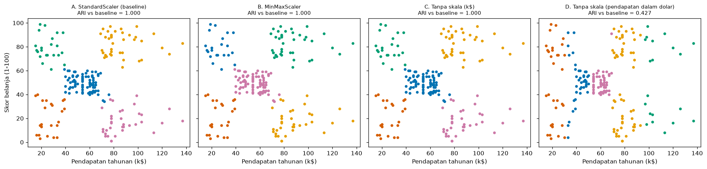

Bab 1 — Introduction to Clustering Experiments¶
Learning Objectives¶
Setelah mempelajari bab ini, kamu mampu:
- Membedakan "menjalankan sebuah algoritma" dari "melakukan sebuah eksperimen".
- Menjelaskan mengapa eksperimen yang sistematis diperlukan pada clustering.
- Merumuskan tujuan eksperimen dan pertanyaan riset yang sesuai untuk masalah unsupervised.
- Mengenali variabel bebas (independent), variabel terikat (dependent), dan variabel terkontrol (controlled).
- Menentukan baseline dan mengukur kebisingan baseline.
- Menjelaskan alur eksperimen clustering dari pertanyaan sampai kesimpulan.
- Menjalankan satu eksperimen kecil yang terkontrol dengan Python, dan membaca hasilnya dengan hati-hati.
- Mengenali kesalahan umum dalam eksperimen clustering.
Introduction¶
Di Level 4 kamu belajar menjalankan algoritma. Di Level 5 kamu belajar menilai hasilnya. Sekarang muncul pertanyaan yang lebih besar: bagaimana kita sampai pada kesimpulan yang bisa dipercaya?
Bayangkan dua orang menganalisis data pelanggan yang sama. Orang pertama menjalankan K-Means sekali, melihat lima kelompok, lalu berkata, "Pelanggan kita ada lima jenis." Orang kedua bertanya lebih dulu: apakah hasil ini berubah kalau seed diganti? kalau skala fitur diganti? kalau K diganti? Ia mencatat semuanya, mengubah satu hal pada satu waktu, dan baru berkesimpulan setelah melihat polanya.
Orang kedua sedang melakukan eksperimen. Level 6 mengajarkan cara berpikir dan bekerja seperti dia: merancang eksperimen, mengatur parameter, membandingkan algoritma, menafsirkan hasil, menguji kestabilan, dan melaporkannya dengan jujur.
Prasyarat
- Level 4 (cara kerja algoritma) dan Level 5 (metrik evaluasi).
- Level 3 Bab 7 (alur kerja clustering).
Fundamental Concepts¶
| Istilah | Arti |
|---|---|
| Experiment | Serangkaian percobaan terencana untuk menjawab sebuah pertanyaan, dengan sebagian hal diubah dan sebagian lain ditahan tetap |
| Research question | Pertanyaan yang ingin dijawab. Contoh: "Apakah penyamaan skala mengubah pengelompokan?" |
| Hypothesis | Dugaan yang bisa diuji. Pada clustering tidak selalu ada, dan itu wajar |
| Independent variable | Hal yang sengaja diubah oleh peneliti |
| Dependent variable | Hal yang diukur untuk melihat pengaruh perubahan itu |
| Controlled variable | Hal yang sengaja ditahan sama supaya tidak mengacaukan hasil |
| Baseline | Kondisi pembanding. Hasil kondisi lain dibaca terhadapnya |
| Condition | Satu kombinasi nilai variabel bebas yang dijalankan |
| Run | Satu kali eksekusi sebuah kondisi |
| Reproducibility | Kemampuan mengulang eksperimen dan mendapat hasil yang sama (dibahas di Bab 9) |
Detailed Explanation¶
Menjalankan algoritma vs melakukan eksperimen¶
| Menjalankan algoritma | Melakukan eksperimen | |
|---|---|---|
| Tujuan | Mendapat satu hasil | Menjawab satu pertanyaan |
| Jumlah percobaan | Satu | Beberapa kondisi terencana |
| Yang diubah | Tidak jelas | Tepat yang dimaksud, satu per satu |
| Pembanding | Tidak ada | Baseline |
| Pencatatan | Di kepala | Tertulis: konfigurasi, seed, hasil |
| Kesimpulan | "Terlihat bagus" | Didukung angka dan pembanding |
Satu kali jalan tidak memberi tahu apakah hasilnya bergantung pada pilihan yang kebetulan kita ambil. Eksperimen membuat ketergantungan itu terlihat.
Mengapa eksperimen sistematis penting pada clustering?¶
Pada clustering, tidak ada label benar yang memberi tahu kita kapan hasil salah. Maka kita perlu cara lain untuk membangun kepercayaan:
- Hasil clustering bergantung pada banyak pilihan: skala fitur, fitur yang dipakai, algoritma, K atau
eps, seed, bahkan sampel data. - Hasil bisa tampak meyakinkan tetapi rapuh. K-Means selalu menghasilkan kelompok. Yang penting adalah apakah kelompok itu tahan terhadap perubahan kecil.
- Pilihan yang tidak dicatat tidak bisa diulang. Tanpa catatan, orang lain (atau dirimu bulan depan) tidak bisa menghasilkan hal yang sama.
Tujuan eksperimen, pertanyaan riset, dan hipotesis¶
Pada supervised learning, tujuan biasanya jelas: "buat akurasi setinggi mungkin pada data uji." Pada clustering, tujuan lebih beragam. Beberapa contoh tipe tujuan:
| Tipe tujuan | Contoh pertanyaan |
|---|---|
| Eksploratif | Struktur kelompok apa yang tampak pada data ini? |
| Komparatif | Algoritma mana yang paling cocok untuk data berbentuk bulan sabit? |
| Sensitivitas | Seberapa jauh hasil berubah bila eps digeser sedikit? |
| Dampak praproses | Apakah penyamaan skala mengubah pengelompokan? |
| Kestabilan | Apakah hasil sama bila seed diganti? |
Hipotesis tidak selalu ada
Pada clustering yang eksploratif, sering tidak ada hipotesis dalam arti klasik, dan sering juga tidak ada label benar. Itu tidak masalah. Yang penting, tujuan dan pertanyaannya jelas sebelum kamu menjalankan apa pun. Jika kamu memang punya dugaan (misalnya "tanpa penyamaan skala, hasil akan didominasi pendapatan"), tulis sebagai hipotesis, lalu uji.
Pertanyaan yang baik: spesifik (bisa dijawab dengan data yang ada), terukur (ada angka atau pengamatan yang menjawabnya), dan terbatas (satu pertanyaan per eksperimen).
Variabel eksperimen¶
Ambil pertanyaan: "Apakah cara menyamakan skala mengubah pengelompokan pelanggan?"
- Variabel bebas: perlakuan skala (StandardScaler, MinMaxScaler, tanpa skala, dan seterusnya). Inilah yang sengaja kita ubah.
- Variabel terikat: seberapa mirip hasil pengelompokan dengan baseline, ukuran kelompok, dan metrik internal.
- Variabel terkontrol: algoritma (K-Means), K,
n_init, seed, dan fitur yang dipakai. Semuanya ditahan sama.
Jika ada dua hal yang berubah sekaligus (misalnya skala dan K), kamu tidak tahu mana yang menyebabkan perbedaan. Inilah alasan utama "ubah satu variabel pada satu waktu".
Karakteristik dataset dan kondisi eksperimen¶
Sebelum menjalankan, catat karakteristik data: jumlah titik, jumlah fitur, rentang dan sebaran tiap fitur, ada tidaknya noise atau outlier, perkiraan bentuk kelompok. Karakteristik ini memengaruhi seberapa jauh kesimpulanmu berlaku. Kesimpulan dari data yang bersih dan bulat belum tentu berlaku untuk data yang berbentuk bulan sabit.
Kondisi eksperimen adalah daftar semua kombinasi yang dijalankan. Pada contoh kita ada empat kondisi, yaitu empat perlakuan skala.
Baseline dan kebisingan baseline¶
Baseline adalah kondisi pembanding yang wajar, biasanya "cara standar" atau "cara yang paling sederhana". Semua hasil dibaca sebagai selisih terhadap baseline.
Ada satu hal penting yang sering terlewat: baseline sendiri bisa berubah bila dijalankan ulang dengan seed lain. Kita menyebutnya kebisingan baseline. Sebelum menyimpulkan bahwa kondisi A berbeda dari baseline, kita perlu tahu seberapa besar perbedaan yang muncul hanya karena seed. Jika baseline saja sudah berubah banyak antar seed, perbedaan kecil antar kondisi tidak berarti apa-apa.
Alur eksperimen¶
flowchart LR
A[Tujuan dan<br/>pertanyaan] --> B[Pilih dataset<br/>dan catat karakteristiknya]
B --> C[Tentukan variabel<br/>bebas, terikat, terkontrol]
C --> D[Tetapkan baseline<br/>dan ukur kebisingannya]
D --> E[Jalankan kondisi<br/>satu per satu]
E --> F[Ukur dan catat hasil]
F --> G[Tafsirkan dengan hati-hati<br/>dan sebut batasannya]Hubungan eksperimen clustering dengan penelitian¶
Eksperimen adalah batu bata penelitian. Penelitian lengkap (Level 7) menambahkan studi literatur, perumusan celah riset, dan penulisan makalah. Level 6 hanya mengajarkan bagian eksperimennya: merancang, menjalankan, menafsirkan, dan melaporkan hasil satu rangkaian eksperimen.
Contoh skenario eksperimen clustering¶
- Segmentasi pelanggan: "Berapa banyak segmen yang stabil bila kita mengganti subset fitur?"
- Pemilihan algoritma: "Algoritma mana yang paling mampu menemukan gerombol berkepadatan berbeda?"
- Praproses: "Apakah menghapus outlier mengubah jumlah kelompok?"
- Parameter: "Seberapa peka DBSCAN terhadap
eps?" - Kestabilan: "Apakah pengelompokan tahan bila 20% data dibuang?"
Kesalahan umum dalam eksperimen¶
- Mengubah banyak hal sekaligus, sehingga penyebab perbedaan tidak jelas.
- Tidak punya baseline, sehingga tidak tahu apa yang dibandingkan.
- Tidak mengukur kebisingan baseline.
- Mengukur dengan cara yang tidak sebanding antar kondisi (kita akan melihatnya di kode).
- Memilih hasil terbaik dari banyak percobaan lalu melaporkannya seolah satu percobaan.
- Tidak mencatat konfigurasi dan seed.
- Menarik kesimpulan yang lebih luas daripada data mendukung (terlalu umum, atau mengandung klaim sebab-akibat).
Experimental Procedure¶
Eksperimen yang kita lakukan di bab ini, ditulis sebagai prosedur:
- Pertanyaan: apakah cara menyamakan skala mengubah pengelompokan Mall Customers?
- Dataset: Mall Customers, dua fitur (
Annual Income (k$)danSpending Score (1-100)), 200 pelanggan. - Variabel bebas: perlakuan skala, dengan empat kondisi: (A)
StandardScalersebagai baseline, (B)MinMaxScaler, (C) tanpa skala dalam satuan asli (ribu dolar), (D) tanpa skala dengan pendapatan dalam dolar. - Variabel terkontrol: K-Means, K = 5,
n_init=10,random_state=42, fitur yang sama. - Variabel terikat: ARI terhadap baseline, ukuran kelompok, dan Silhouette.
- Ukur kebisingan baseline: ulangi baseline dengan 10 seed.
- Jalankan keempat kondisi.
- Ukur di ruang yang sama: metrik internal harus dihitung di ruang yang sama agar sebanding.
- Tafsirkan dan catat batasannya.
Python Implementation¶
Skrip lengkapnya ada di examples/level-6/01_introduction_to_clustering_experiments.py, dan notebook-nya di notebooks/level-6/01-introduction-to-clustering-experiments.ipynb. Setiap potongan kode diikuti penjelasannya.
Konteks masalah: sebuah toko ingin tahu apakah pengelompokan pelanggannya bergantung pada cara menyamakan skala.
Tujuan eksperimen: menjawab pertanyaan pada bagian Experimental Procedure.
Dataset: Mall Customers (data/mall_customers.csv), 200 pelanggan. Dipilih karena sudah dikenal dari Level 2 sampai 5, dan dua fiturnya punya skala yang mirip (rentang berbeda tetapi sebaran sama), sehingga kita bisa melihat kapan skala penting dan kapan tidak.
Pustaka: NumPy, pandas, Matplotlib, scikit-learn.
Bagian A — Siapkan alat¶
import numpy as np
import pandas as pd
import matplotlib.pyplot as plt
from sklearn.cluster import KMeans
from sklearn.metrics import adjusted_rand_score, silhouette_score
from sklearn.preprocessing import MinMaxScaler, StandardScaler
Penjelasan: KMeans adalah algoritma. adjusted_rand_score (Level 5, Bab 8) kita pakai untuk membandingkan dua pengelompokan tanpa memedulikan nomor kelompok. silhouette_score adalah metrik internal. StandardScaler dan MinMaxScaler adalah dua cara menyamakan skala.
Bagian B — Merumuskan rancangan lebih dulu¶
# Rancangan eksperimen ditulis lebih dulu, sebelum menjalankan apa pun
experiment = {
"pertanyaan": "Apakah cara menyamakan skala mengubah pengelompokan pelanggan Mall Customers?",
"variabel_bebas": "perlakuan skala fitur (4 kondisi)",
"variabel_terkontrol": "algoritma K-Means, K = 5, n_init = 10, seed = 42, dua fitur yang sama",
"variabel_terikat": "kesamaan pengelompokan dengan baseline (ARI), ukuran kelompok, Silhouette di ruang bersama",
"baseline": "StandardScaler",
}
for key, value in experiment.items():
print(f"{key:20s}: {value}")
Penjelasan: experiment adalah dictionary (pasangan kunci dan nilai) yang menuliskan rancangan sebelum kita menjalankan apa pun. Perulangan for key, value in experiment.items() mencetaknya. {key:20s} memberi lebar 20 karakter agar rapi. Kebiasaan menulis rancangan lebih dulu mencegahmu mengubah pertanyaan setelah melihat hasil.
Bagian C — Dataset dan karakteristiknya¶
df = pd.read_csv("data/mall_customers.csv")
features = ["Annual Income (k$)", "Spending Score (1-100)"]
X_raw = df[features].to_numpy(dtype=float)
print("Jumlah pelanggan :", len(df))
print("Fitur dipakai :", features)
print(df[features].describe().loc[["min", "max", "mean", "std"]].round(2).to_string())
Penjelasan:
pd.read_csvmembaca data.featuresadalah dua kolom yang dipakai.df[features].to_numpy(dtype=float)mengubahnya menjadi array NumPy bertipe desimal..describe()memberi ringkasan statistik..loc[["min", "max", "mean", "std"]]memilih empat baris yang kita perlukan..round(2)membulatkan dua desimal.
Bagian D — Baseline dan kebisingannya¶
SEED = 42
X_standard = StandardScaler().fit_transform(X_raw) # kondisi baseline
baseline = KMeans(n_clusters=5, n_init=10, random_state=SEED).fit_predict(X_standard)
print("Ukuran kelompok baseline:", sorted(np.bincount(baseline).tolist(), reverse=True))
# Kebisingan baseline: ulangi baseline dengan seed lain, lalu bandingkan dengan ARI
runs = [KMeans(n_clusters=5, n_init=10, random_state=seed).fit_predict(X_standard) for seed in range(10)]
ari_between_runs = [adjusted_rand_score(runs[0], run) for run in runs[1:]]
print("ARI baseline seed 0 vs seed 1..9, terkecil:", round(min(ari_between_runs), 4))
print("ARI baseline seed 0 vs seed 1..9, terbesar:", round(max(ari_between_runs), 4))
Penjelasan baris demi baris:
SEED = 42menyimpan seed dalam satu tempat supaya mudah diganti.StandardScaler().fit_transform(X_raw)membuat data baseline: tiap fitur dikurangi rata-rata lalu dibagi simpangan baku.KMeans(n_clusters=5, n_init=10, random_state=SEED).fit_predict(X_standard)menjalankan K-Means dan mengembalikan label.np.bincount(...)menghitung ukuran kelompok,sorted(..., reverse=True)mengurutkannya dari terbesar.- Kebisingan: daftar komprehensi
[... for seed in range(10)]menjalankan baseline dengan seed 0 sampai 9.adjusted_rand_score(runs[0], run)membandingkan tiap hasil dengan hasil seed 0. Kita tidak membandingkan nomor kelompok langsung (Level 5, Bab 8).mindanmaxmemberi rentang kebisingan.
Bagian E — Menjalankan empat kondisi¶
X_dollars = X_raw.copy()
X_dollars[:, 0] *= 1000 # pendapatan dalam dolar, bukan ribu dolar
conditions = {
"A. StandardScaler (baseline)": X_standard,
"B. MinMaxScaler": MinMaxScaler().fit_transform(X_raw),
"C. Tanpa skala (k$)": X_raw,
"D. Tanpa skala (pendapatan dalam dolar)": X_dollars,
}
labels_by_condition = {}
for name, X_condition in conditions.items():
labels_by_condition[name] = KMeans(n_clusters=5, n_init=10, random_state=SEED).fit_predict(X_condition)
sizes = sorted(np.bincount(labels_by_condition[name]).tolist(), reverse=True)
print(f"{name:42s} ukuran kelompok: {sizes}")
Penjelasan:
X_dollars[:, 0] *= 1000mengalikan kolom pendapatan dengan 1000, sehingga satuannya dolar (bukan ribu dolar). Sebelumnya kita salin dulu dengan.copy()supayaX_rawtidak ikut berubah.conditionsadalah dictionary: nama kondisi menjadi kunci, dan data hasil perlakuannya menjadi nilai.- Pada perulangan, hanya data yang berbeda. K,
n_init, dan seed sama untuk semua kondisi. Itulah variabel terkontrol.
Bagian F — Mengukur di ruang yang sama¶
rows = []
for name, X_condition in conditions.items():
labels = labels_by_condition[name]
rows.append(
{
"Kondisi": name,
"ARI vs baseline": adjusted_rand_score(baseline, labels),
"Silhouette (ruang sendiri)": silhouette_score(X_condition, labels),
"Silhouette (ruang bersama)": silhouette_score(X_standard, labels),
}
)
result_table = pd.DataFrame(rows).set_index("Kondisi")
print(result_table.round(3).to_string())
Penjelasan: untuk tiap kondisi kita mencatat tiga angka.
ARI vs baseline: seberapa mirip pengelompokan dengan baseline.Silhouette (ruang sendiri): Silhouette yang dihitung pada data kondisi itu sendiri (X_condition).Silhouette (ruang bersama): Silhouette dari label kondisi itu, dihitung pada data baseline (X_standard).
Alasannya: jarak di ruang yang berbeda tidak sebanding. Silhouette di ruang bersama mengukur semua kondisi dengan penggaris yang sama.
Bagian G — Menggambar¶
palette = ["#0072B2", "#E69F00", "#009E73", "#CC79A7", "#D55E00", "#56B4E9"]
fig, axes = plt.subplots(1, 4, figsize=(17, 4.2), sharex=True, sharey=True)
for ax, (name, labels) in zip(axes, labels_by_condition.items()):
for c in range(5):
ax.scatter(X_raw[labels == c, 0], X_raw[labels == c, 1], s=14, color=palette[c])
ari = result_table.loc[name, "ARI vs baseline"]
ax.set_title(f"{name}\nARI vs baseline = {ari:.3f}", fontsize=9)
ax.set_xlabel("Pendapatan tahunan (k$)")
axes[0].set_ylabel("Skor belanja (1-100)")
plt.tight_layout()
plt.show()
Penjelasan: empat panel berdampingan, sharex=True dan sharey=True membuat sumbu sama. Semua panel digambar dalam satuan asli (X_raw) supaya bisa dibandingkan secara visual. Warna menunjukkan kelompok. Nomor warna bisa berbeda antar panel, jadi yang dibandingkan adalah bentuk pembagian, bukan warnanya.
Bagian H — Meringkas¶
for name in conditions:
ari = result_table.loc[name, "ARI vs baseline"]
verdict = "praktis sama dengan baseline" if ari >= 0.95 else "berbeda dari baseline"
print(f"{name:42s} ARI = {ari:.3f} -> {verdict}")
Penjelasan: ambang 0.95 hanya contoh batas "praktis sama" untuk keperluan ringkasan. Pilihan ambang harus ditulis dan dijustifikasi, bukan diam-diam digeser setelah melihat hasil.
Code Explanation¶
| Bagian kode | Peran |
|---|---|
experiment = {...} |
Rancangan eksperimen yang ditulis lebih dulu |
SEED = 42 |
Seed tunggal untuk variabel terkontrol |
for seed in range(10) |
Mengukur kebisingan baseline |
conditions = {...} |
Kondisi-kondisi variabel bebas |
adjusted_rand_score(a, b) |
Membandingkan dua pengelompokan tanpa peduli nomor |
silhouette_score(X_standard, labels) |
Mengukur di ruang bersama |
Pelatihan vs penilaian
KMeans(...).fit_predict(...) adalah pelatihan. ARI dan Silhouette adalah penilaian. Dalam eksperimen, kita memisahkan keduanya dengan jelas.
How to Run¶
Dari folder utama proyek (setelah mengaktifkan lingkungan virtual):
pip install -r requirements-notebooks.txt
python examples/level-6/01_introduction_to_clustering_experiments.py
Skrip mencetak output ke terminal dan menyimpan satu gambar ke docs/assets/level-6/. Notebook interaktifnya:
Output di bawah berasal dari eksekusi nyata dengan Python 3.14, NumPy 2.5.4, pandas 3.1.1, scikit-learn 1.9.1, dan Matplotlib 3.11.2.
Expected Output¶
pertanyaan : Apakah cara menyamakan skala mengubah pengelompokan pelanggan Mall Customers?
variabel_bebas : perlakuan skala fitur (4 kondisi)
variabel_terkontrol : algoritma K-Means, K = 5, n_init = 10, seed = 42, dua fitur yang sama
variabel_terikat : kesamaan pengelompokan dengan baseline (ARI), ukuran kelompok, Silhouette di ruang bersama
baseline : StandardScaler
Jumlah pelanggan : 200
Fitur dipakai : ['Annual Income (k$)', 'Spending Score (1-100)']
Annual Income (k$) Spending Score (1-100)
min 15.00 1.00
max 137.00 99.00
mean 60.56 50.20
std 26.26 25.82
Ukuran kelompok baseline: [81, 39, 35, 23, 22]
ARI baseline seed 0 vs seed 1..9, terkecil: 1.0
ARI baseline seed 0 vs seed 1..9, terbesar: 1.0
A. StandardScaler (baseline) ukuran kelompok: [81, 39, 35, 23, 22]
B. MinMaxScaler ukuran kelompok: [81, 39, 35, 23, 22]
C. Tanpa skala (k$) ukuran kelompok: [81, 39, 35, 23, 22]
D. Tanpa skala (pendapatan dalam dolar) ukuran kelompok: [56, 50, 42, 32, 20]
ARI vs baseline Silhouette (ruang sendiri) Silhouette (ruang bersama)
Kondisi
A. StandardScaler (baseline) 1.000 0.555 0.555
B. MinMaxScaler 1.000 0.559 0.555
C. Tanpa skala (k$) 1.000 0.554 0.555
D. Tanpa skala (pendapatan dalam dolar) 0.427 0.584 0.157
[gambar disimpan: docs/assets/level-6/01-empat-kondisi-skala.png]
A. StandardScaler (baseline) ARI = 1.000 -> praktis sama dengan baseline
B. MinMaxScaler ARI = 1.000 -> praktis sama dengan baseline
C. Tanpa skala (k$) ARI = 1.000 -> praktis sama dengan baseline
D. Tanpa skala (pendapatan dalam dolar) ARI = 0.427 -> berbeda dari baseline
Gambar yang dihasilkan:

Interpretasi output¶
1. Karakteristik data. 200 pelanggan. Pendapatan: min 15, maks 137, rata-rata 60,56, simpangan baku 26,26. Skor belanja: min 1, maks 99, rata-rata 50,20, simpangan baku 25,82. Kedua fitur punya sebaran yang mirip (26,26 vs 25,82), walau rentangnya berbeda. Catatan ini penting untuk membaca hasil.
2. Kebisingan baseline. Ukuran kelompok baseline: 81, 39, 35, 23, 22. ARI antara seed 0 dan seed 1 sampai 9 bernilai 1,0 (terkecil) dan 1,0 (terbesar). Jadi pada konfigurasi ini (n_init=10), seed tidak mengubah hasil sama sekali. Kebisingan baseline nol, sehingga selisih kecil antar kondisi pun bermakna. (Pada konfigurasi lain, kebisingan bisa jauh lebih besar. Kamu akan menemukannya di latihan 1.)
3. Hasil empat kondisi.
| Kondisi | Ukuran kelompok | ARI vs baseline | Silhouette (ruang sendiri) | Silhouette (ruang bersama) |
|---|---|---|---|---|
| A. StandardScaler (baseline) | 81, 39, 35, 23, 22 | 1,000 | 0,555 | 0,555 |
| B. MinMaxScaler | 81, 39, 35, 23, 22 | 1,000 | 0,559 | 0,555 |
| C. Tanpa skala (k$) | 81, 39, 35, 23, 22 | 1,000 | 0,554 | 0,555 |
| D. Tanpa skala (dolar) | 56, 50, 42, 32, 20 | 0,427 | 0,584 | 0,157 |
- B dan C identik dengan baseline (ARI 1,000, ukuran kelompok sama). Pada data ini,
MinMaxScalerdan "tanpa skala" menghasilkan pembagian yang sama denganStandardScaler. Alasannya: kedua fitur memang sudah berskala mirip (sebaran 26,26 dan 25,82), jadi penyamaan skala tidak mengubah jarak secara berarti. - D berbeda jelas. Dengan pendapatan dikali 1000, selisih pendapatan membuat jarak jauh lebih besar daripada selisih skor belanja. K-Means hampir hanya membagi menurut pendapatan, terlihat pada gambar sebagai pita vertikal. ARI turun menjadi 0,427, dan ukuran kelompok berubah.
4. Mengapa "ruang bersama" penting. Pada kondisi D, Silhouette di ruang sendiri adalah 0,584, yang lebih tinggi daripada baseline (0,555). Seandainya kita hanya melihat angka itu, kita bisa menyimpulkan D "lebih baik". Padahal di ruang bersama, Silhouette D hanya 0,157, jauh lebih rendah. Silhouette di ruang sendiri tinggi karena di ruang D hampir semua jarak ditentukan pendapatan, sehingga pembagian berdasarkan pendapatan tampak "rapi" di ruang itu. Angka dari dua ruang yang berbeda tidak boleh dibandingkan langsung.
Batas kesimpulan
Hasil ini berlaku untuk satu dataset, satu algoritma (K-Means), satu K (5), dan dua fitur. Kita tidak boleh menyimpulkan bahwa "penyamaan skala tidak pernah penting". Yang kita temukan: pada data ini, ketiga cara menyamakan skala memberi hasil yang sama, dan ketidakseimbangan skala yang besar (kondisi D) mengubah hasil secara nyata. Kita juga belum menguji alasan di balik perbedaan itu lebih jauh, dan tidak ada klaim sebab-akibat tentang pelanggan.
Practical Application¶
Menentukan praproses untuk produksi. Sebuah tim ingin tahu apakah pipeline segmentasi mereka perlu StandardScaler. Eksperimen kecil seperti ini menjawabnya dengan bukti: jika ARI antar perlakuan skala 1,0, pilih yang paling sederhana. Jika rendah, pilih satu dan dokumentasikan.
Memeriksa kerapuhan hasil sebelum dilaporkan. Sebelum menyampaikan "lima segmen" ke manajemen, ulangi dengan seed berbeda dan perlakuan berbeda. Jika hasil berubah banyak, laporkan ketidakpastiannya.
Mereproduksi analisis orang lain. Karena rancangan, seed, dan konfigurasi dicatat, analis lain bisa menjalankan ulang dan membandingkan.
Hands-on Exercises¶
- Ulangi bagian kebisingan baseline dengan
n_init=1(bukan 10) pada seed 0 sampai 9, lalu hitung ARI tiap hasil terhadap baseline. Berapa ARI terkecil dan terbesarnya? Berapa dari sepuluh yang tepat 1,0? Apa artinya untuk variabel terkontrol? - Pada kondisi D, jalankan
StandardScalersetelah mengalikan pendapatan dengan 1000. Berapa ARI terhadap baseline? - Ubah K menjadi 4 dan 6 (K berubah, skala tetap
StandardScaler). Berapa ARI terhadap baseline K = 5? Mengapa ini bukan eksperimen skala lagi? - Tulis rancangan eksperimen (pertanyaan, variabel bebas, terikat, terkontrol, baseline) untuk pertanyaan: "Apakah menghapus fitur
Annual Incomemengubah pengelompokan?" - Mengapa Silhouette di ruang sendiri bisa menyesatkan saat membandingkan kondisi dengan skala berbeda?
- Mengapa kita tidak boleh membandingkan nomor kelompok dua kondisi langsung, misalnya
labels_A == labels_B?
Jawaban
Hasil nomor 1 sampai 3 berasal dari eksekusi nyata.
- Dengan
n_init=1, ARI terhadap baseline berkisar 0,692 sampai 1,0, dan 4 dari 10 seed memberi tepat 1,0. Dengann_init=1, hasil bergantung pada titik awal, jadi seed menjadi sumber kebisingan. Berartin_initharus diperlakukan sebagai variabel terkontrol yang dicatat: mengubahnya diam-diam mengubah kebisingan baseline. - ARI 1,000.
StandardScalermenghapus perbedaan satuan, sehingga pendapatan dalam dolar sama dengan dalam ribu dolar setelah distandarkan. Ini menunjukkan masalahnya adalah tidak menyamakan skala, bukan satuannya. - K = 4: ARI 0,753. K = 6: ARI 0,961. Karena yang berubah adalah K, bukan skala, perbandingan ini menjawab pertanyaan lain ("seberapa peka hasil terhadap K?").
- Contoh: pertanyaan "Apakah menghapus
Annual Incomemengubah pengelompokan?"; variabel bebas: himpunan fitur (dengan atau tanpa pendapatan); terikat: ARI terhadap baseline, ukuran kelompok; terkontrol: K-Means, K = 5,n_init=10, seed 42, skalaStandardScaler; baseline: kedua fitur lengkap. Catatan: bila fitur berbeda, hasil perlu dibandingkan dengan ARI, bukan dengan Silhouette yang dihitung pada ruang masing-masing. - Jarak di ruang yang berskala berbeda tidak sebanding. Pada kondisi D, hampir semua jarak ditentukan pendapatan, sehingga pembagian berdasarkan pendapatan terlihat rapi dan Silhouette-nya tinggi (0,584), padahal di ruang bersama hanya 0,157.
- Nomor kelompok sembarang. Dua pengelompokan identik bisa punya nomor yang tertukar. Gunakan metrik tak peka permutasi seperti ARI.
Troubleshooting¶
Masalah teknis¶
| Masalah | Penyebab | Solusi |
|---|---|---|
FileNotFoundError: data/mall_customers.csv |
Skrip dijalankan dari folder yang salah | Jalankan dari folder utama proyek |
| Hasil berbeda dari output di bab | Versi pustaka berbeda, atau random_state/n_init diubah |
Samakan versi, seed, dan n_init |
X_raw ikut berubah setelah dikali 1000 |
Lupa .copy() |
Salin dulu: X_dollars = X_raw.copy() |
| ARI selalu 1,0 | Memang tidak ada perbedaan, atau dua variabel yang dibandingkan sebenarnya sama | Periksa apakah variabel bebas benar-benar berbeda |
ValueError: Number of labels is 1... |
Semua titik masuk satu kelompok | Periksa K dan data |
Kesalahan umum¶
- Mengubah beberapa hal sekaligus. Pada eksperimen ini hanya skala yang berubah.
- Membandingkan metrik dari ruang berbeda (Silhouette D sendiri vs baseline).
- Mengabaikan kebisingan baseline. Perbedaan kecil bisa hanya efek seed.
- Menyimpulkan terlalu luas. Satu dataset dan satu algoritma tidak membuktikan hukum umum.
- Menggeser ambang "sama" setelah melihat hasil.
- Tidak menulis rancangan lebih dulu, sehingga pertanyaan ikut berubah mengikuti hasil.
- Menafsirkan perbedaan sebagai sebab-akibat tentang pelanggan. Eksperimen ini hanya tentang perilaku algoritma terhadap perlakuan skala.
Summary¶
- Eksperimen berbeda dari sekadar menjalankan algoritma: ia punya pertanyaan, variabel yang terkontrol, baseline, dan pencatatan.
- Pada clustering yang unsupervised, hipotesis dan label benar tidak selalu ada. Yang wajib: tujuan dan pertanyaan yang jelas.
- Variabel bebas diubah, terikat diukur, terkontrol ditahan. Ubah satu variabel pada satu waktu.
- Baseline adalah pembanding, dan kebisingannya perlu diukur. Pada Mall Customers dengan
n_init=10, ARI antar seed selalu 1,0, tetapi dengann_init=1bervariasi dari 0,692 sampai 1,0. - Pada Mall Customers,
MinMaxScalerdan tanpa skala (k$) memberi pengelompokan yang sama denganStandardScaler(ARI 1,000), sedangkan pendapatan dalam dolar tanpa skala mengubahnya (ARI 0,427). - Ukur semua kondisi di ruang yang sama: Silhouette ruang sendiri untuk kondisi D (0,584) menyesatkan, sedangkan di ruang bersama hanya 0,157.
- Batasi kesimpulan sesuai data dan eksperimen. Hindari klaim sebab-akibat.
Bab berikutnya: Bab 2 membahas desain dan konfigurasi eksperimen: tabel konfigurasi, pencatatan, dan contoh desain untuk K-Means, DBSCAN, dan Hierarchical Clustering.
References¶
- Montgomery, D. C. (2017). Design and Analysis of Experiments (9th ed.). Wiley.
- Hennig, C. (2015). What are the true clusters? Pattern Recognition Letters, 64, 53–62.
- Jain, A. K. (2010). Data clustering: 50 years beyond K-means. Pattern Recognition Letters, 31(8), 651–666.
- Scikit-learn documentation: Clustering dan Clustering performance evaluation.
- Sandve, G. K., Nekrutenko, A., Taylor, J., & Hovig, E. (2013). Ten simple rules for reproducible computational research. PLOS Computational Biology, 9(10), e1003285.